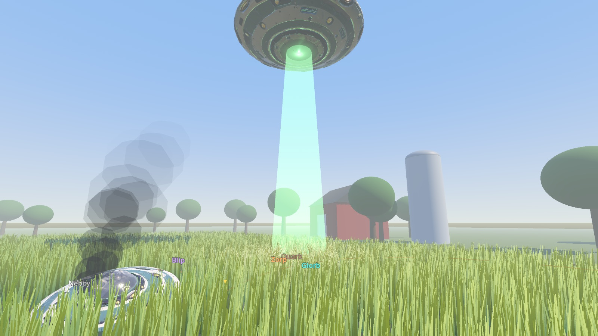
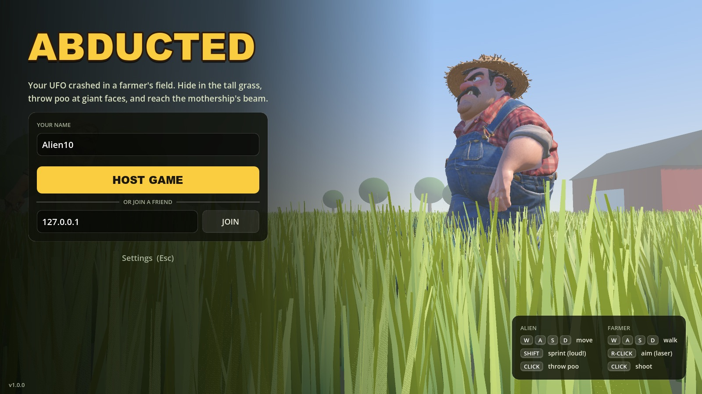

Aliens vs farmers
Play as a tiny alien hiding in the grass, or become the giant farmer hunting them down.
Hide in the grass
The grass towers over you. Sprinting sends big waves the giants can spot from across the field. Stand still and they barely see you.
Poo in the face
Lob poo at a giant's face to blind them for a few seconds. Then run, because they get angry.
Catch the mothership
In the last 15 seconds a beam comes down. Get into it to escape. Anyone left behind gets the shotgun.
Play the farmer
Hunt aliens yourself with a shotgun and a stamina bar, while his wife sweeps the field with her broom.
Live voice chat
Hold V to talk. The farmer booms across the field in a deep giant voice. Aliens squeak, and he can hear them nearby.
Field mice
Rats scurry through the grass, fooling the giants with fake waves, and sometimes they bite. Expect screaming.
Screenshots
Built with Godot. Characters by Meshy.





Install
The game isn't sold through an app store, so your computer will warn you the first time. That's normal.
Mac
- Download Abducted-mac.zip and double-click it to unzip.
- Drag Abducted into your Applications folder (optional).
- First time only: right-click the app, choose Open, then click Open again. On newer macOS, if there's no Open button: click Done, go to System Settings → Privacy & Security, scroll down and click Open Anyway.
- Click Allow when it asks for the microphone (for voice chat).
Works on Apple-chip and Intel Macs, macOS 11 or newer. If macOS says the app "is damaged", run this once in Terminal: xattr -cr /Applications/Abducted.app
Windows
- Download Abducted-windows.zip and unzip it (right-click, Extract All).
- Double-click Abducted.exe.
- First time only: if Windows shows "Windows protected your PC", click More info, then Run anyway.
- If the firewall asks, click Allow access so friends can join you.
Windows 10 or 11, 64-bit.
Play online with friends
One player hosts, everyone else joins with the host's address. Everyone needs the same version: the game tells you if someone has to update.
Same Wi-Fi / house
- The host clicks Host Game.
- The lobby shows "Friends join with:
192.168.x.x". Click Copy and send it. - Friends paste it next to Join and click it.
- The host picks settings and clicks Start Round.
Over the internet
- Everyone installs Tailscale (free) and signs in.
- The host shares their Tailscale network with friends (Tailscale → Share / invite).
- Friends join using the host's Tailscale address (starts with
100.).
Advanced: instead of Tailscale, the host can forward UDP port 7777 on their router and share their public IP.
Controls
Alien
| W A S D | Move (walking makes small ripples) |
| Shift | Sprint: big waves, easy to spot |
| Space | Jump up for a peek (you're visible up there) |
| Click / E | Throw poo at a giant's face |
| V | Hold to talk |
Farmer
| W A S D | Walk |
| Shift | Run (uses stamina) |
| Right-click | Aim (shows a red laser) |
| Click | Shoot |
| V | Hold to talk in a giant voice |
Esc opens settings: volume, mouse sensitivity, fullscreen, microphone mode.
What's new
Every version, newest first.
Loading...